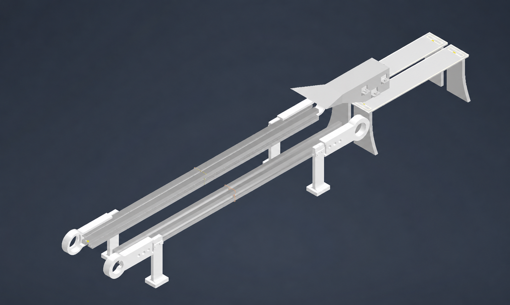
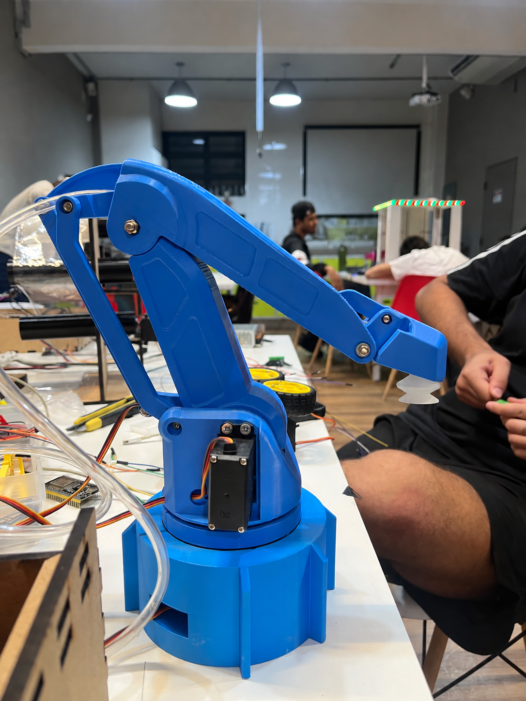

Embalagem
Controle térmico, tração do filme, corte e selagem sincronizados.
O Fluxo integra uma Flow Pack, uma esteira sensorizada e um robô paletizador em um protótipo funcional, criado para validar o sincronismo da linha antes do escalonamento industrial.
O protótipo foi construído em escala reduzida para validar, antes de qualquer escalonamento industrial, o sincronismo da linha, a selagem térmica, o transporte do pacote e os eixos de movimentação do robô.
Avançar na história →Controle térmico, tração do filme, corte e selagem sincronizados.
Esteira instrumentada conecta a saída da Flow Pack ao ponto de pega.
Braço de 3 DoF manipula e posiciona caixas em mosaicos calculados.
A Célula Industrial Integrada de Embalagem, Transporte e Paletização Inteligente reúne mecânica, eletrônica, firmware e software supervisório em um protótipo totalmente funcional. Sua função é reduzir o risco técnico antes do escalonamento, validando o comportamento conjunto dos subsistemas em condições controladas.
O Fluxo é realizado a partir de uma parceria com a FESTO. A empresa atua globalmente em automação e formação técnica, desenvolvendo soluções que preparam pessoas e organizações para o futuro digital da produção. No projeto, essa conexão aproxima o desenvolvimento acadêmico dos desafios reais da indústria.
Conheça a FESTO ↗Somos estudantes do 1º ano, 2º semestre, de Engenharia da Computação na FIAP. Unimos organização, desenvolvimento e eletrônica para construir e validar o protótipo.
A linha acompanha o pacote desde a formação e selagem até a coleta, rotação e composição do pallet.
A Flow Pack controla temperatura, filme, corte e selagem.
A miniesteira movimenta e detecta o pacote no ponto de pega.
O braço de 3 DoF coleta, gira e posiciona a caixa no mosaico.
Dois termopares Tipo K, lidos individualmente por módulos MAX6675, monitoram em malha fechada as mordaças Cross Seal. Fitas de Nicromo isoladas com Teflon recebem acionamento PWM por MOSFETs logic-level com dissipadores.
Três MG996R realizam giro e desbobinamento; outros dois acionam rodas tracionadoras. Um NEMA 17 com driver A4988, correia e polias GT2 dá suporte ao avanço contínuo do filme.
Servo e atuador dedicado executam corte e selagem transversal/longitudinal. Micro switches e sensores ópticos sincronizam o ciclo, enquanto um OLED SSD1306 exibe a temperatura local.
A miniesteira usa peças impressas em ABS/PLA, roletes e correia. Motores DC são comandados pelo ESP32 via ponte H, e um sensor confirma a presença do pacote no ponto de pega.
Base, ombro e cotovelo são movimentados por três servomotores MG996R de alto torque. A estrutura impressa em 3D oferece amplitude de trabalho adequada ao espaço reduzido da bancada.
Ventosa, bomba de vácuo de 6 V e solenoide de 12 V fazem a coleta e liberação. O punho gira até 180° para compor diferentes mosaicos calculados e simulados no dashboard.
O protótipo organiza a evolução técnica em etapas verificáveis antes da aplicação industrial.
Estrutura, mecanismos e peças adaptadas para impressão 3D.
Montagem mecânica, eletrônica, firmware e supervisório.
Validação do sincronismo, da selagem e dos eixos de movimento.
Evolução orientada pelos dados e aprendizados da bancada.
Área preparada para registrar a Flow Pack, a miniesteira, o braço robótico e os bastidores da integração.


Dois nós ESP32 executam o processamento de borda; a interface web concentra telemetria, receitas e simulação dos mosaicos.
Gerencia controle térmico, NEMA 17, cinco servos do filme plástico e o ciclo completo de embalagem.
Controla a esteira, recebe o sensor de presença, calcula cinemática inversa e mosaicos e comanda o PCA9685 via I2C.
React e TypeScript exibem telemetria de OEE, gestão de receitas e simulação interativa dos mosaicos em 2D e 3D via WebSockets.
Duas fontes de 12 V e duas fontes de 5 V distribuem a alimentação entre os diferentes subsistemas da célula.
Fale com a equipe para conhecer o protótipo, trocar experiências ou conversar sobre novas possibilidades para o projeto.